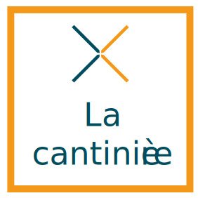

<nav class="navbar navbar-toggleable-md navbar-light bg-faded">
  <button class="navbar-toggler navbar-toggler-right" type="button" data-toggle="collapse"
    data-target="#navbarNavDropdown3" aria-controls="navbarSupportedContent" aria-expanded="false" 
    aria-controls="navbarNavDropdown3"
    aria-label="Toggle navigation">
    <span class="navbar-toggler-icon"></span>
  </button>
  <app-button class="nav-brand" (action)="isConnected ? logout() : openLoginModal()"
    [text]="isConnected ? 'Déconnexion' : 'Connexion'"></app-button>
    <a class="navbar-brand" href="#">
      
    </a>
  <div class="collapse width navbar-collapse bg-faded" id="navbarNavDropdown3">
    <ul class="navbar-nav ml-auto ">
      <li class="nav-item active">
        <a class="nav-link" href="/"><i class="material-icons">home</i> Home</a>
        <hr *ngIf="isConnected" />
        <a class="nav-link" *ngIf="isConnected" href="/user/profile">
          <i class="material-icons">account_circle</i> {{ user?.name }}</a>
      </li>
      <li class="nav-item">
        <span class="mx-auto" *ngIf="isConnected">
          <i class="material-icons">euro_symbol</i> {{ user?.wallet }}€</span>
      </li>
    </ul>
  </div>
</nav>
